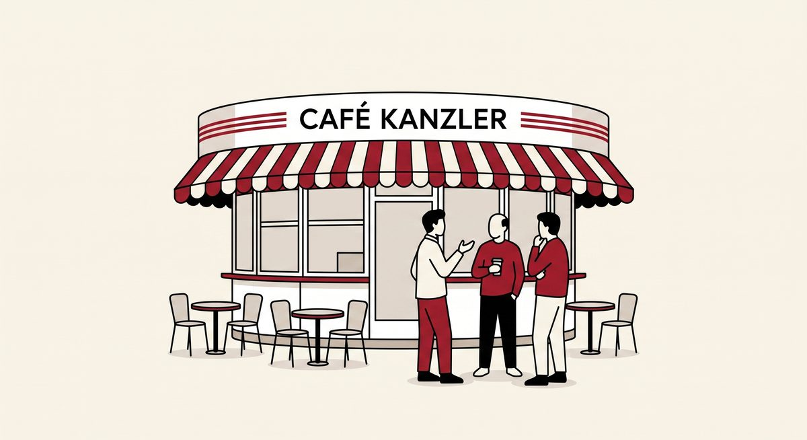
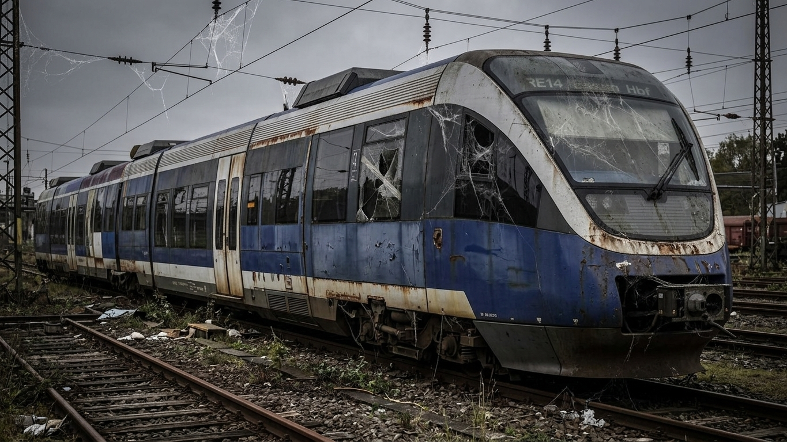

Impressum
Welt
Deutschland
Lokal
About
„Du verlierst Kunden, wenn du dich so deutlich positionierst", höre ich immer wieder. Sehe ich anders:
«KLARE KANTE ZEIGEN IST KEIN LUXUS.»
Michael Kleinespel

Neueste Artikel

Wenn „Der Borkener" zum Dauer-Ärgernis wird
Ukrainischer Unabhängigkeitstag
Gewalt in der politischen Diskussion ist AfD-Muster
 Ukrainischer Unabhängigkeitstag
Ukrainischer Unabhängigkeitstag
 Gewalt in der politischen Diskussion ist AfD-Muster
Gewalt in der politischen Diskussion ist AfD-Muster